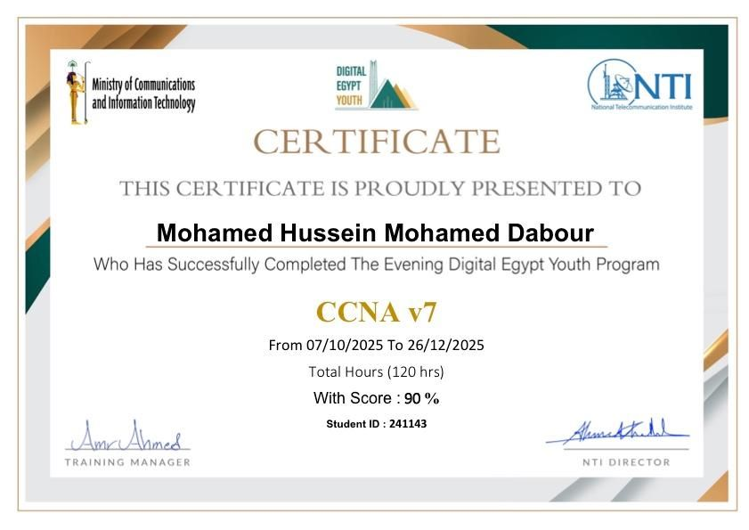

01 / WEB
Web Application Security Assessment
Practical security assessment focused on reconnaissance, vulnerability identification, and web application security testing in controlled environments.
View Project →I’m Mohamed Hussein Mohamed Dabour, a Cybersecurity student and aspiring Penetration Tester focused on practical security labs, web application security, reconnaissance, vulnerability assessment, and networking.
ABOUT ME
I am Mohamed Hussein Mohamed Dabour, a Cybersecurity student at October 6 University, Faculty of Computers and Information, where I started my studies in 2024.
My main interest is offensive security, especially penetration testing and web application security. I enjoy understanding how systems work, identifying potential weaknesses, and learning how security issues can be discovered and mitigated.
My learning journey includes networking, cybersecurity operations, web security, vulnerability assessment, reconnaissance, Linux, and practical cybersecurity labs.
I am currently focused on strengthening my technical skills and building a strong portfolio through hands-on projects and continuous learning.
SKILLS
PROJECTS
Practical security assessment focused on reconnaissance, vulnerability identification, and web application security testing in controlled environments.
View Project →Practical assessment of a vulnerable WordPress environment involving reconnaissance, vulnerability discovery, exploitation in a controlled lab environment, and security analysis.
View Project →Practical network reconnaissance and security assessment performed in controlled environments to identify hosts, services, and potential security weaknesses.
View Project →Hands-on cybersecurity challenges covering web and system security concepts in labs and CTF environments.
CERTIFICATIONS & TRAINING

Networking fundamentals · Network infrastructure · TCP/IP · Routing and switching
Cybersecurity fundamentals and practical security concepts.
Python · Web development · HTML · CSS · JavaScript · PHP · Web technologies
SERVICES
Check whether provided email addresses appear in known public data breaches and provide a clear security report with recommended protection steps.
Perform authorized reconnaissance and basic vulnerability assessment of a website and provide a structured report explaining identified security issues and recommendations.
Prepare a professional security risk report identifying potential online security risks, their possible impact, and practical recommendations.
LEARNING JOURNEY
OPEN SOURCE & PROJECTS
Explore my public GitHub profile for projects, experiments, and future security work.
CONTACT
Whether you're interested in discussing cybersecurity, a project, an internship opportunity, or a potential collaboration, feel free to get in touch.